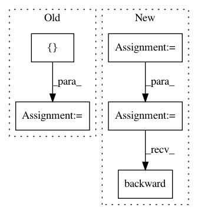

8406abaa40c9d42e4528285024a7b3ba7596a1e6,src/spn/gpu/Pytorch.py,,,#,14
Before Change
add_parametric_text_support()
torch.manual_seed(1234)
m = Normal(torch.tensor([0.0]), torch.tensor([1.0]))
L = Gaussian(mean=0.0, stdev=1.0, scope=[0]) * Gaussian(mean=1.0, stdev=1.0, scope=[1])
R = Gaussian(mean=2.0, stdev=1.0, scope=[0]) * Gaussian(mean=3.0, stdev=1.0, scope=[1])
spn = 0.4 * L + 0.6 * R
After Change
print(spn_to_str_equation(spn))
a = torch.autograd.Variable(torch.tensor(0), requires_grad=True)
b = torch.autograd.Variable(torch.tensor(2), requires_grad=True)
c += a + b
print("first", c)
c.backward(retain_graph=True)
c = a + b
a[0] = 5
c.backward(retain_graph=True)
print("second", c)
In pattern: SUPERPATTERN
Frequency: 3
Non-data size: 5
Instances
Project Name: SPFlow/SPFlow
Commit Name: 8406abaa40c9d42e4528285024a7b3ba7596a1e6
Time: 2018-06-10
Author: molina@cs.tu-darmstadt.de
File Name: src/spn/gpu/Pytorch.py
Class Name:
Method Name:
Project Name: pytorch/examples
Commit Name: 9faf2c65f74e3ee9bdaeedf9f3e5856727f0afe7
Time: 2017-12-04
Author: design@kaixhin.com
File Name: reinforcement_learning/actor_critic.py
Class Name:
Method Name: finish_episode
Project Name: dpressel/mead-baseline
Commit Name: 3d9e51d5034e89bcec3a04eff3e646c70b45edb2
Time: 2017-03-16
Author: dpressel@gmail.com
File Name: classify/python/tf/train.py
Class Name: Trainer
Method Name: train